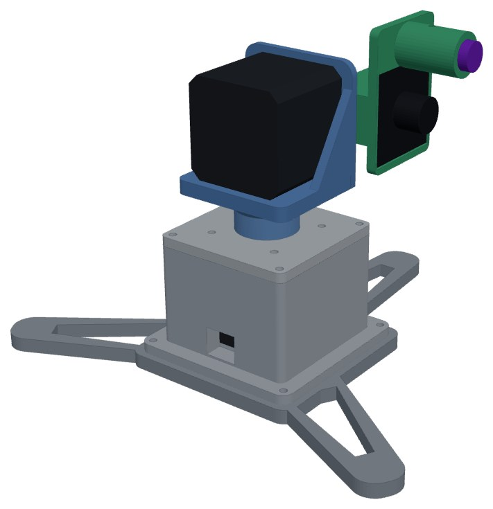
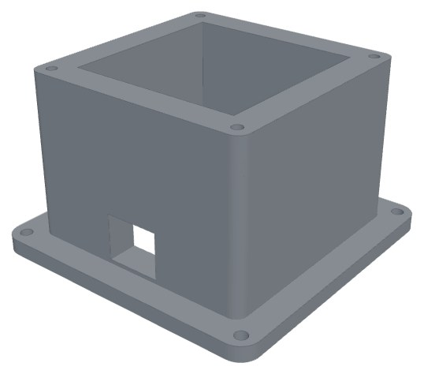
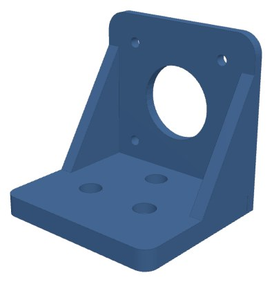
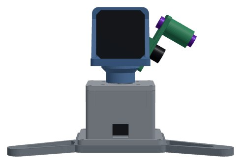
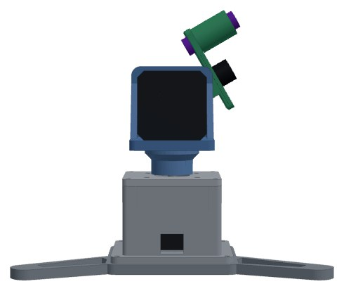
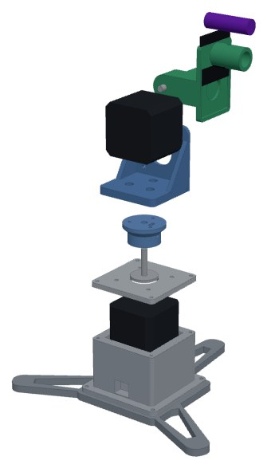
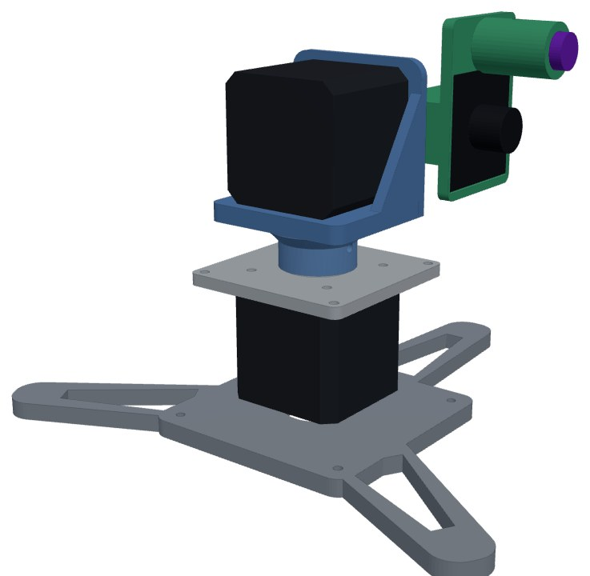
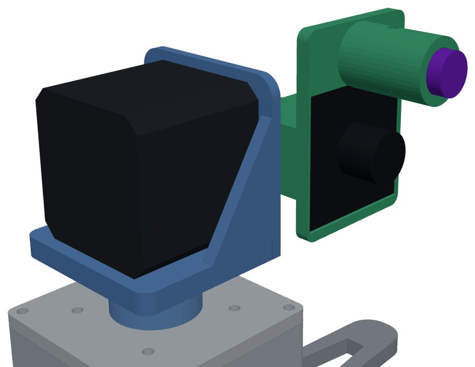
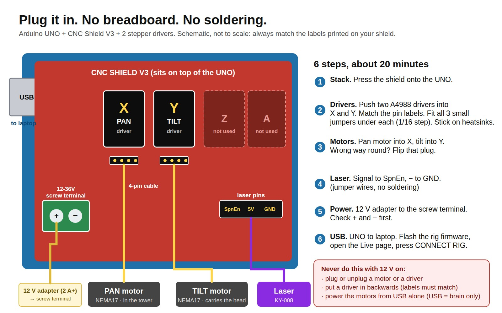

The direct-drive pan-tilt tower, built from the design you chose: the pan motor stands inside a printed tower, the tilt motor lies on top of it, and the camera and laser clamp straight onto the tilt shaft. A CNC shield plugs into an Arduino UNO, so there is no breadboard.

| 2 × A4988 stepper drivers from MK2. Test each one first (the self-test does it). |
| 12 V adapter check the label: 3 A or more is best. A 2 A adapter works if you set the driver current low. Replace any damaged cable. |
| 2 × NEMA17 motors + their 4-pin cables from MK2. The shaft must be 5 mm. |
| USB camera (38 × 38 mm board) from MK2. Measure your board: the pocket is 38.6 mm. |
| Beacon + decoy no change. |
| Laptop with the Live page no change. |
The belt design needs 4 bearings, 3 pulleys, 4 belts and 1,074 g of printing. The tower needs none of those parts and prints 198 g.
| Item | Qty | Price (estimate) | Where | Note |
|---|---|---|---|---|
| Arduino UNO R3 + USB-B cable | 1 | ₹450–700 | Amar shop | CH340 clone is fine. Amazon: "Arduino UNO R3 CH340 with cable". |
| CNC Shield V3 for UNO | 1 | ₹250–350 | Amar shop | It must say "V3" and fit on an UNO. Amazon: "CNC shield V3 Arduino UNO". |
| 12 mm laser module, red 650 nm, 5 mW, 5 V | 1 | ₹100–200 | Amar shop | Only 5 mW. Never a "burning" laser. Amazon: "650nm 5mW laser module 12mm". |
| Dupont jumper wires, female-female, 20 cm | 1 | ₹60–100 | Amar shop | One pack. For the laser. |
| Fuse holder 5×20 mm + 3 A fuses + rocker switch | 1 | ₹60–120 | Amar shop | Safety for the 12 V. Optional but cheap. |
| Heatsinks for A4988 (if the drivers have none) | 1 | ₹20–40 | Amar shop | Small stick-on type. |
| M3 screw kit (6 to 30 mm) with nuts and washers | 1 | ₹250–400 | Hardware shop | Covers every screw below. Amazon: "M3 screw nut assortment kit". |
| M2 × 6 self-tapping screws | 1 | ₹20–40 | Hardware shop | Four are used for the camera board. |
| Super glue + rubber feet (or non-slip tape) | 1 | ₹60–120 | Hardware shop | Three feet under the tripod legs. |
If a motor or driver from MK2 turns out to be damaged: NEMA17 about ₹400–600 each, A4988 about ₹150–200 each. The shop slips for carrying are in a separate short PDF.
Take the separate shop sheet (3 pages) with you. It has one slip for each place. Quick version:
| Where | What to get | About |
|---|---|---|
| Amar shop electronics | UNO R3 + cable · CNC shield V3 · 12 mm laser module · jumper wires · fuse holder + fuses + switch · heatsinks | ₹940–1,510 |
| Hardware shop | M3 screw kit with nuts · M2 × 6 self-tapping · super glue · rubber feet | ₹330–560 |
| 3D print shop | The six parts (+ the coupon first), PETG, 198 g | ₹990–1,980 |
| Amazon only if needed | Anything the shops do not have. Search words are on shop slip 2. | same |
| Part of the project | Cost (estimate) |
|---|---|
| Parts to buy (list above) | ₹1,270–2,070 |
| Printing 198 g at a print shop (₹5–10 per gram) | ₹990–1,980 |
| Test coupon (28 g), print first | ₹140–281 |
| Total with a print shop | ₹2,400–4,331 |
| Total if a friend prints it (PETG only) | ₹1,510–2,470 |
| Part | Qty | Size mm | Weight | Supports | How to lay it |
|---|---|---|---|---|---|
| Tripod base 01_tripod_base.stl | 1 | 190 × 167 × 6 | 52 g | No | Flat on the bed, as shown. Three legs and the square pad. Four nut pockets on the underside. |
| Tower sleeve 02_tower_sleeve.stl | 1 | 74 × 74 × 46 | 66 g | No | Foot flange on the bed, open end up. Holds the pan motor. A cable slot near the bottom. |
| Tower cap 03_tower_cap.stl | 1 | 60 × 60 × 4 | 16 g | No | Flat on the bed. The pan motor screws to its underside. |
| Pan hub 04_pan_hub.stl | 1 | 34 × 34 × 16 | 9 g | No | Small end down, wide end up. Clamps on the pan shaft. Slot for one M3 nut. |
| Tilt mount 05_tilt_mount.stl | 1 | 52 × 47 × 51 | 26 g | No | Plate down, wall and ribs standing up. The tilt motor screws to its wall. |
| Head 06_head.stl | 1 | 58 × 40 × 70 | 29 g | Yes, only under the camera plate | Stand it on the rear of the clamp, laser tube pointing up. Camera on the front, laser tube on top, clamps on the tilt shaft. |
| Test coupon (print FIRST) 00_test_coupon.stl | 1 | 100 × 46 × 8 | 28 g | No | Flat on the bed. Checks every fit in about an hour. See page "Do the parts fit?". |


Left: tower sleeve. Right: tilt mount. The other parts are pictured on the shop sheet and in the exploded view.
| Bought part | Its size | Our hole or pocket | Gap |
|---|---|---|---|
| NEMA17 motor body (pan) | 42.3 mm square | Tower cavity 44.6 mm square | 1.15 mm each side |
| NEMA17 pilot boss (pan and tilt) | 22 mm | Hole in the cap and in the wall: 22.3 mm | 0.15 mm each side |
| NEMA17 screw holes | 31 mm square | 4 clearance holes, 3.2 mm | M3 passes |
| Motor shaft (pan and tilt) | 5 mm | Bore in the hub and in the head: 5.2 mm | 0.1 mm each side |
| M3 nut (across flats 5.5) | 2.4 mm thick | Slot 5.9 × 2.6 mm | drops in |
| M3 screw cutting its own thread | 3 mm | Pilot hole 2.7 mm | bites |
| USB camera board | 38 mm square | Pocket 38.6 mm square, 2.4 mm deep | 0.3 mm each side |
| Laser module | 12 mm | Bore 12.3 mm + one M3 clamp screw | push fit |
| Tower flange to tripod base | 4 × M3 at 66 mm square | 4 holes + 4 nut pockets underneath | bolts |
| Check | Poses | Collisions |
|---|---|---|
| Standing still, every part against every part | 1 | 0 |
| Head and plate turning against the tower and base: pan −90° to +90° | 6 | 0 |
| Head against the tilt mount and plate: tilt −45° to +45° | 6 | 0 |
| Head against the tower and base: tilt −45° to +45° | 6 | 0 |


Tilt −30° (left) and +30° (right). The head always stays about 2 mm away from the tilt wall, and the firmware stops at ±30°.

| No. | Part | Holds |
|---|---|---|
| 01 | Tripod base | Everything. Three legs, one pointing to the head side. |
| 02 | Tower sleeve | The pan motor hangs inside it. |
| 03 | Tower cap | The pan motor is screwed to its underside. |
| 04 | Pan hub | Clamps on the pan shaft and carries the tilt mount. |
| 05 | Tilt mount | The tilt motor is screwed to its wall, lying on its side. |
| 06 | Head | Clamps on the tilt shaft. Camera in front, laser on top. |
Size when built: 190 × 167 mm footprint, 137 mm tall. The tilt axis is 100 mm above the table. The pan axis passes through the centre of the tilt motor, so the tower stays balanced.

Inside view: the pan motor hangs from the cap, the tower sleeve is hidden.

Head, camera and laser, close up.

These are our targets. We have not measured them yet. Write the real result next to each one.
| Test | Target | Result | |
|---|---|---|---|
| Pan and tilt directions on TEST MOTION | Both right | ||
| Laser dot after SET AIM, beacon 2 m away | Dot on the beacon | ||
| Time to lock on the blinking beacon | About 2 s or less | ||
| Decoy next to the beacon, 10 tries | 0 wrong locks | ||
| Cover the beacon, then uncover it | Holds, then locks again | ||
| Move the beacon left, right, up, down | The dot follows | ||
| 10 minutes running, then press C (centre) | Back to the same spot |
| What you see | What to do |
|---|---|
| A motor buzzes and does not turn | Check the 4-pin plug sits fully in. Check the 12 V is on. Turn the driver current up a little. |
| A motor turns the wrong way | Flip that motor's plug, or use INVERT on the Live page. |
| A hub or the head slips on its shaft | The set screw must press on the flat side. Tighten it. Add a drop of thread-lock. |
| The head drops or shakes | The camera and laser are too heavy or off-centre. Keep the head under about 150 g. |
| It loses position (centre is not centre) | Turn the driver current up a little or lower the speed. Check the jumpers (1/16). |
| A driver gets too hot | Fit the heatsink, turn the current down, add a small fan. |
One step is 0.11°, about 2 pixels on the MK2 camera. For 0.056°, use DRV8825 drivers at 1/32 (set MICROSTEPS to 32 in the firmware). For 0.028° use the belt design, Plan Urena. The UNO, shield, motors and firmware carry over.